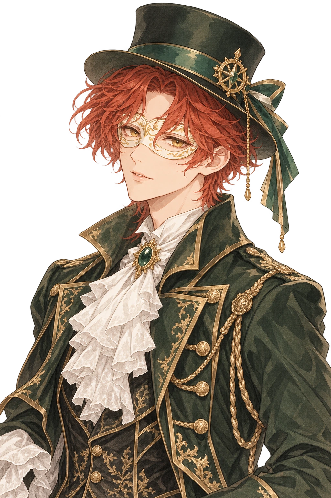

안개 너머의 데크
눈을 뜨면, 배는 이미 멈춰 있다.
문 너머에서는 오래된 오르골 소리가 들린다.
WASD 또는 방향키 ↑↓로 걷습니다.
화면을 누르면 마우스로 시점을 돌릴 수 있습니다.
마우스가 잠기지 않으면 화면을 드래그하세요.
가까이 다가가 E 또는 화면의 행동 버튼을 누르세요.
Shift: 조금 빠르게 걷기 / Esc: 마우스 해제
터치 화면은 아래 이동 버튼과 화면 드래그를 사용하세요.
문 → 데크의 빛 → 키퍼 → 붉은 레버 순서로 진행합니다.
소리는 오른쪽 위에서 언제든 끌 수 있습니다.